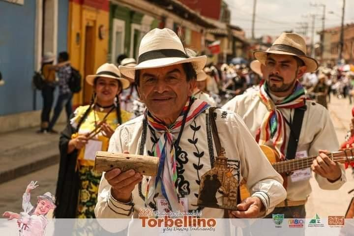
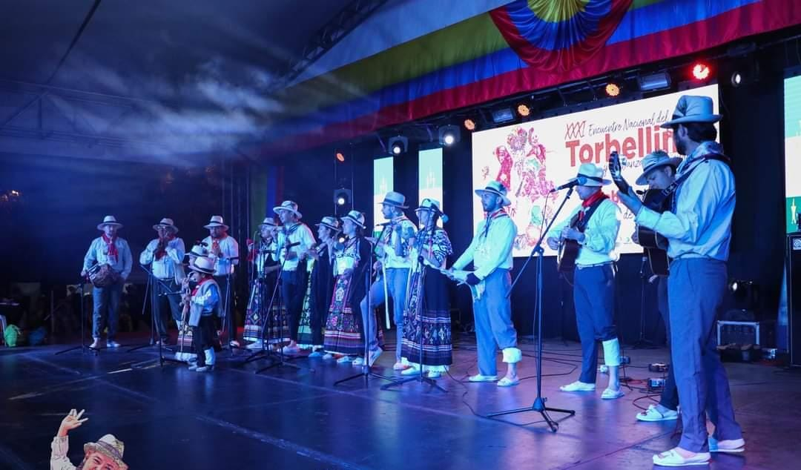
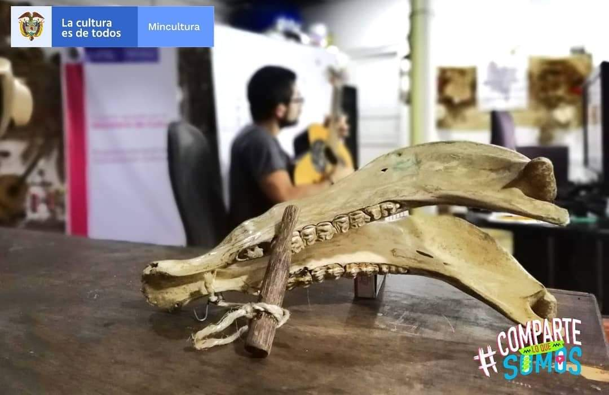

"de velez y muy de velez con orgullo y con honor esta es la funcación con todo nuestro folclor"
Somos una fundación artística y cultural, enfocada en enseñar el legado de nuestros ancestros. A lo largo del tiempo, muchas de las tradiciones que nos definían se han ido perdiendo. Por esta razón, consideramos que es nuestro deber inculcar en los jóvenes el folclore que ha sido cultivado por generaciones en nuestra provincia veleña. Nuestros programas educativos están diseñados para preservar y difundir el patrimonio cultural de nuestra región. Ofrecemos cursos en la enseñanza e interpretación de instrumentos de cuerda y percusión como el tiple, requinto, guitarra, carracas, cucharas, entre otros. También enseñamos el canto de la guabina y el baile del torbellino. Además, nuestros estudiantes aprenden cómo elaborar e interpretar instrumentos típicos. Estamos comprometidos con la transmisión de estas tradiciones a las nuevas generaciones y enriquecer así nuestra cultura. Creemos que el folclore es una parte fundamental de nuestra identidad como pueblo, y que debemos trabajar juntos para mantenerlo vivo. En 1999, Ramiro Olarte Bareño fundó la Escuela de Formación Artística llamada en ese entonces "Con Todo Nuestro Folclor", la cual se enfocó en preservar y difundir el folclore colombiano. La fundación ha representado a Vélez y a Santander en varios eventos culturales importantes, como el Festival Mono Núñez en Ginebra,Valle del Cauca, el Encuentro Nacional del Torbellino y las Danzas Tradicionales en Tabio, Cundinamarca, el Festival Musical Jose A. Morales en Socorro, Santander y el Festival Nacional de Colonias en Villanueva, Casanare, entre otros. En 2019, la escuela se registró como fundación ante la Cámara de Comercio y comenzó a trabajar en proyectos con el Ministerio de Cultura. Gracias a estos proyectos, la fundación logró llegar no solo a regiones lejanas de Colombia, sino también a otros países, lo cual amplió nuestro alcance. Los proyectos consistieron en impartir clases virtuales personalizadas para enseñar la tradición de la región de manera efectiva y didáctica. Nuestra fundación cuenta con profesores altamente capacitados en sus respectivas disciplinas, quienes están comprometidos con la enseñanza de las artes tradicionales. Ofrecemos una amplia gama de cursos y talleres para estudiantes de todas las edades y niveles de habilidad, lo que nos permite llegar a una audiencia diversa y promover la cultura local. Además de la formación artística, también fomentamos valores como el respeto, la tolerancia y la solidaridad entre nuestros estudiantes. Creemos que estos valores son fundamentales para formar buenos ciudadanos y contribuir positivamente a la sociedad. Estamos orgullosos de ser parte de la comunidad veleña y de contribuir a la preservación de nuestras raíces culturales. A través de nuestro trabajo, esperamos inspirar a las generaciones futuras a apreciar y valorar la riqueza cultural de nuestra región.
  